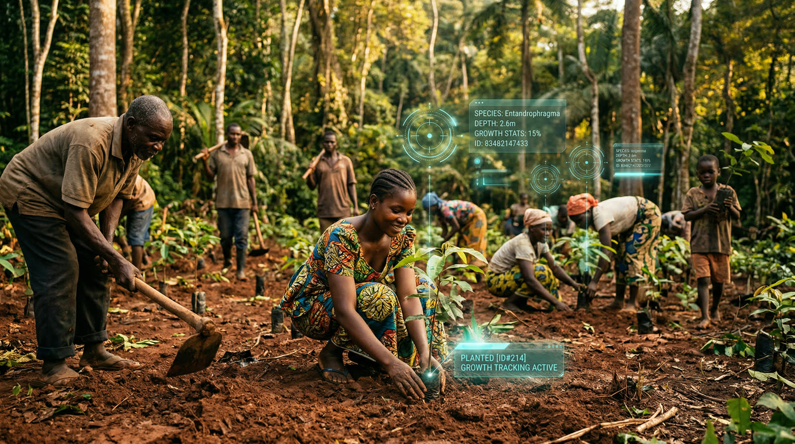
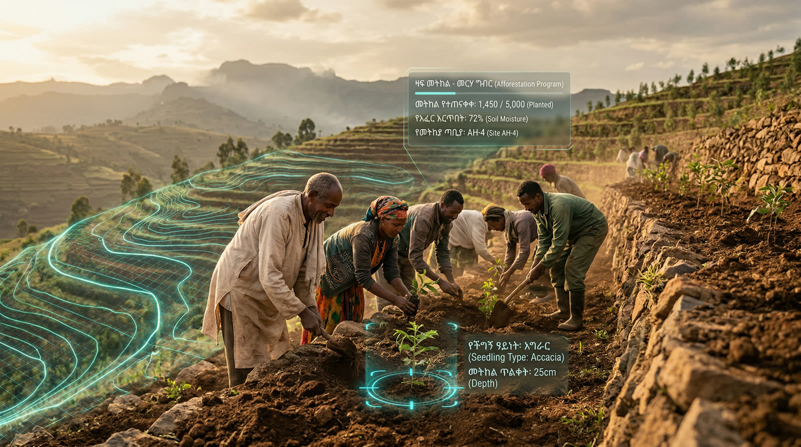
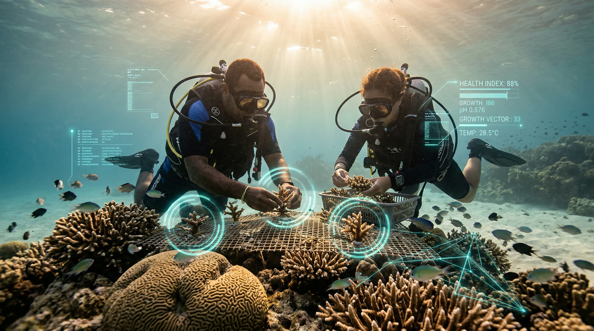
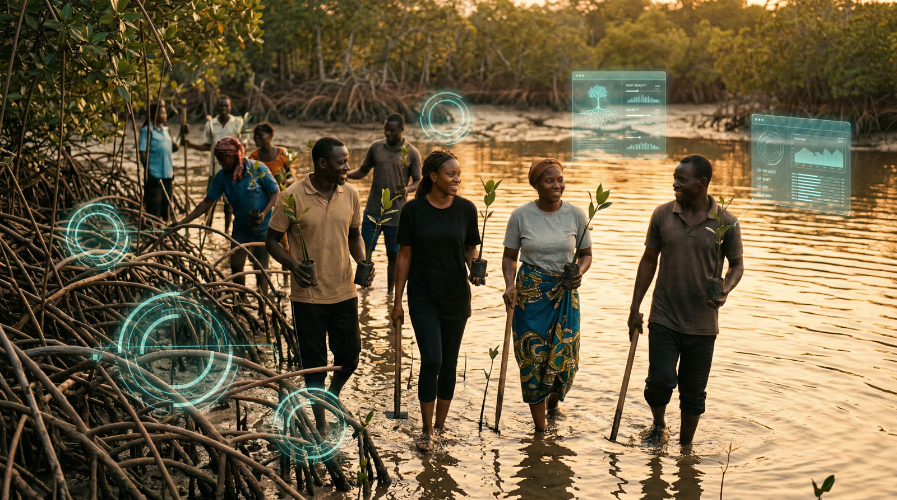
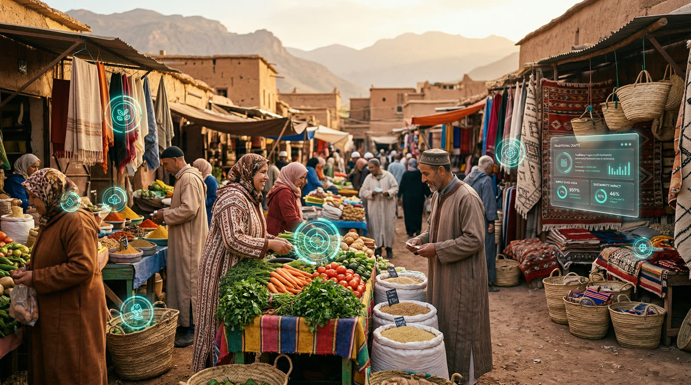
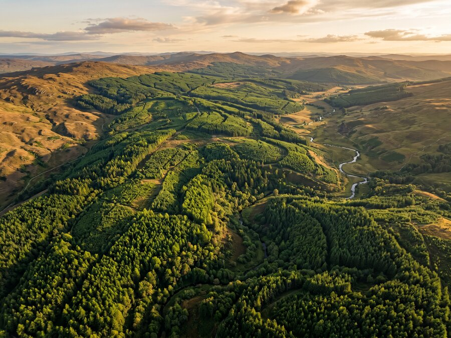

Gentle Earth Project
Earth's Legacy,
Our Promise
Developing sovereign-scale natural-capital infrastructure through science-based, regenerative ecological engineering.
What We Do
An outcomes-led project developer
GEP restores primary ecosystems using permaculture-based, tech-enabled, phased ecological engineering to create permanent, self-sustaining landscapes that generate measurable biodiversity, carbon, food security, and livelihoods.
What We Develop
Five Pillars of Ecological Restoration
Every ecosystem we develop is paired with a circular economic framework that creates long-term livelihoods, stabilises communities, and anchors stewardship of the restored land.

Ecosystem Type 01
Primary Forest Systems
Engineered primary forests designed to restore full ecological function — biodiversity, water regulation, soil formation, and carbon storage — across large contiguous landscapes.
Learn more →
Ecosystem Type 02
Afforestation Green Belts
Converting degraded drylands and desertification zones into productive green corridors that stabilise soils, reduce climate vulnerability, and support food security.
Learn more →
Ecosystem Type 03
Coastal & Marine Zones
Reef-forestation and coastal ecosystem recovery programs that restore marine biodiversity, protect shorelines, and sustain coastal fishing communities.
Learn more →
Ecosystem Type 04
Mangrove & Delta Restoration
Delta and mangrove ecosystem recovery that delivers blue carbon sequestration, storm surge protection, and critical habitat for coastal biodiversity.
Learn more →
Ecosystem Type 05
Rural Infrastructure
Integrated circular economic development — food systems, supply chains, and local economic infrastructure planned as an extension of ecological restoration, not as a separate exercise.
Learn more →How We Deliver
Green Infrastructure for Nations
- Multi-country project origination and pipeline development
- Long-horizon, asset-level project vehicles built for institutional capital
- Government-aligned, outcome-led frameworks
- Multi-asset natural-capital portfolios spanning carbon, biodiversity, and food systems
- Integrated supply-chain and food-security systems
- Proprietary ecosystem-intelligence and verification technology
- Institutional and DFI-ready investment structures

For Carbon Markets
A Real Emissions Solution
For companies seeking credibility, longevity, and defensible emissions reductions, GEP functions as a full emissions solution embedded in real-world infrastructure.
Our high-value carbon and biodiversity credits are generated through sovereign-scale primary ecosystem restoration, delivering durable, verifiable outcomes backed by proprietary ecosystem-intelligence and long-term land stewardship.
Explore Carbon CreditsWhy Primary Ecosystems
When restored correctly, they are self-sustaining, resilient, and capable of supporting both ecological function and human systems over generational timescales.
This is why we prioritise large-scale green infrastructure alongside primary ecosystem restoration. Food systems, supply chains, and local economic infrastructure are planned as an extension of ecological development — not as a tick-box exercise in sustainability.
Our alignment with sustainability goals is genuine and deliberate, because real recovery depends on the co-development of rural regions and natural capital.
Get Involved
Ready to work with Gentle Earth?
Whether you represent a government, an institution, or a company with emissions obligations — we want to hear from you.